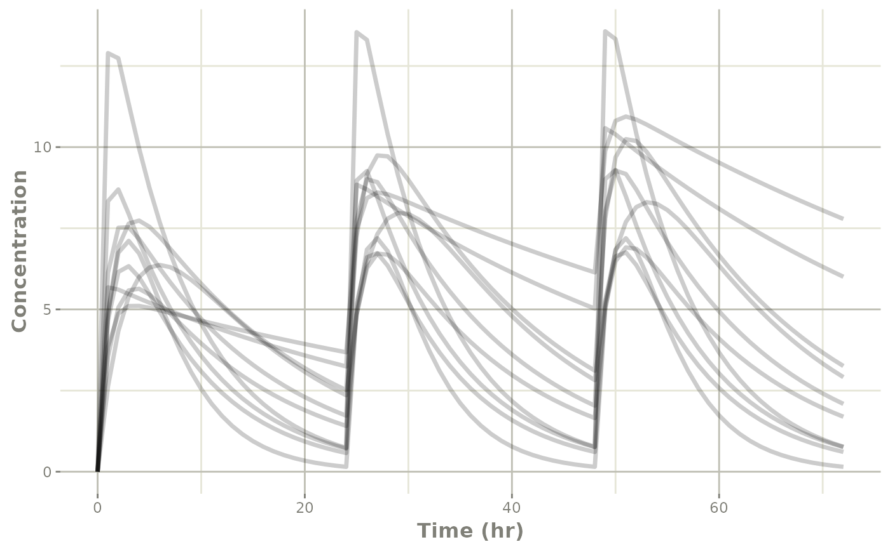
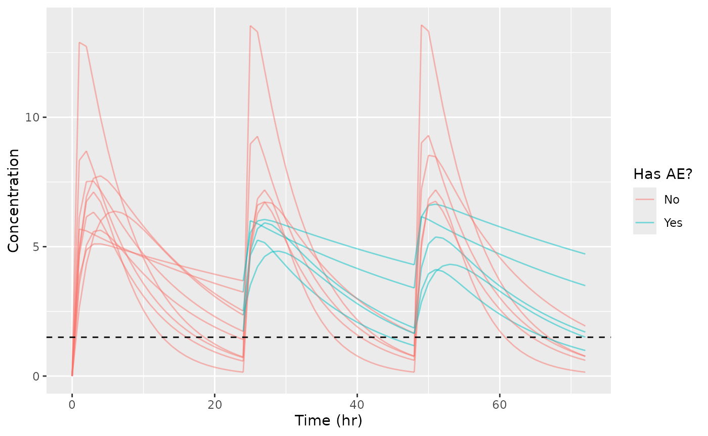
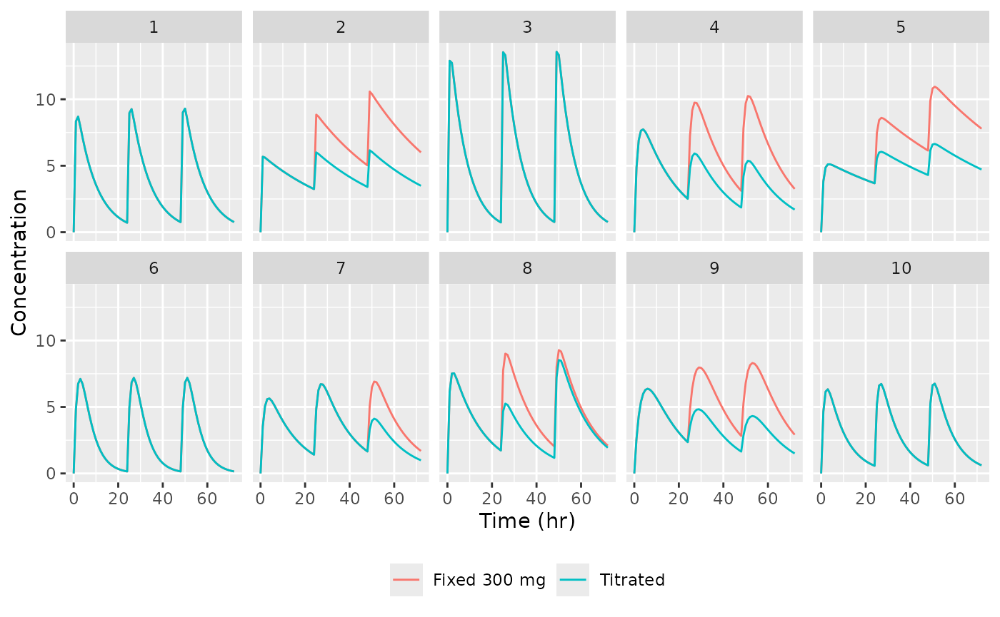
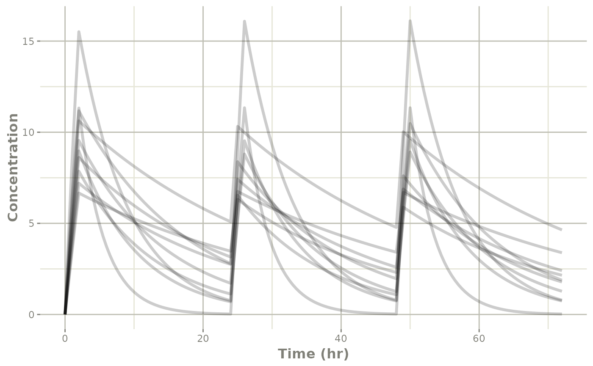

Simulations with individually-titrated dosing
2026-09-18
Source:vignettes/articles/simulate-titrated-dosing.Rmd
simulate-titrated-dosing.RmdThe problem
Some simulations cannot be expressed as a dataset. If the dose a subject receives depends on what that same subject’s simulated concentration happened to be an hour earlier, then the event table cannot be written down before the solve starts – the dose is an output of the simulation, not an input to it.
This is the ordinary shape of a titration trial:
- give a dose,
- come back at a protocol-defined visit,
- look at the subject’s response,
- decide the next dose from what you saw.
rxode2 (and therefore nlmixr2) can do this
directly: the model block may push new events into the subject’s
own event history while the model is being solved. This article
works through a titration example using those adaptive-dosing helpers.
The general reference for the helpers themselves is the Adaptive
Dosing with rxode2 article; this one is about assembling them into a
simulation you would actually run.
All models below are written as nlmixr2 model
functions (ini({}) plus model({})),
which is the form you would already be using for a fit, and which lets
the dosing helpers take their default arguments.
A fixed-dose reference simulation
Start with an ordinary one-compartment model and a fixed 300 mg dose every 24 hours. Nothing adaptive is happening yet – this is the comparator.
oneCompartment <- function() {
ini({
tka <- log(1.57); label("Ka")
tcl <- log(2.72); label("Cl")
tv <- log(31.5); label("V")
eta.ka ~ 0.6
eta.cl ~ 0.3
eta.v ~ 0.1
add.sd <- 0.7
})
model({
ka <- exp(tka + eta.ka)
cl <- exp(tcl + eta.cl)
v <- exp(tv + eta.v)
d/dt(depot) <- -ka * depot
d/dt(center) <- ka * depot - cl / v * center
cp <- center / v
cp ~ add(add.sd)
})
}The event table has the three protocol doses and hourly sampling for ten subjects. The seed is set immediately before the solve so that the same ten sets of random effects can be re-drawn later and the two simulations compared subject by subject:
evFixed <- et(amt = 300, cmt = "depot", time = c(0, 24, 48)) |>
et(seq(0, 72, by = 1)) |>
et(id = 1:10)
set.seed(42)
simFixed <- nlmixr2(oneCompartment, evFixed, est = "rxSolve")
Titrating the dose inside the model
Now suppose the drug causes a dose-limiting adverse event, and that
the AE is driven by exposure: at each protocol visit (24 and 48 hours,
pre-dose) a subject with cp > 1.5 is deemed to be having
an AE and has their next dose halved to 150 mg. A subject below the
threshold gets the full 300 mg.
Two things make this work:
-
bolus()pushes the visit dose from insidemodel({}), so the dose amount can depend oncpat that moment. Only the first dose – the protocol-mandated 300 mg at time 0 – stays in the event table. -
hasAEis a sticky variable. A left-hand-side variable that is not assigned at the current time keeps the value it had at the previous time rather than being recomputed, so the AE status determined at a visit carries forward between visits. It starts outNA, which is how you detect the first record for a subject and initialize it. (Sticky variables are covered in detail in the rxode2 sticky variables article.)
oneCompartmentTitrated <- function() {
ini({
tka <- log(1.57); label("Ka")
tcl <- log(2.72); label("Cl")
tv <- log(31.5); label("V")
eta.ka ~ 0.6
eta.cl ~ 0.3
eta.v ~ 0.1
add.sd <- 0.7
})
model({
ka <- exp(tka + eta.ka)
cl <- exp(tcl + eta.cl)
v <- exp(tv + eta.v)
d/dt(depot) <- -ka * depot
d/dt(center) <- ka * depot - cl / v * center
cp <- center / v
# Protocol visits: 24 and 48 hours. The `t > 0` guard keeps the
# rule from firing on the time-zero dose, which is protocol-fixed.
isVisit <- (t > 0 && t <= 48 && t %% 24 == 0)
# `hasAE` is NA on the first record of each subject; after that it
# is sticky and keeps whatever the last visit assigned.
if (is.na(hasAE)) {
hasAE <- 0
} else if (isVisit) {
hasAE <- cp > 1.5
}
# A subject having an AE gets half a dose.
if (isVisit) {
bolus(300 * (1 - 0.5 * hasAE), depot)
}
cp ~ add(add.sd)
})
}The event table now contains only the time-zero dose and the sampling grid. The 24- and 48-hour doses do not appear anywhere in the data – the model creates them:
evTitrated <- et(amt = 300, cmt = "depot", time = 0) |>
et(seq(0, 72, by = 1)) |>
et(id = 1:10)
set.seed(42)
simTitrated <- nlmixr2(oneCompartmentTitrated, evTitrated, est = "rxSolve")hasAE is returned with the simulation, so the dosing
decision is auditable after the fact:
simTitratedDf <- as.data.frame(simTitrated)
subset(simTitratedDf, time %in% c(24, 48),
select = c(id, time, cp, hasAE, depot))
#> id time cp hasAE depot
#> 25 1 24 0.7128557 0 1.049548e-09
#> 49 1 48 0.7579301 0 1.786221e-09
#> 98 2 24 3.2430224 1 -1.749128e-11
#> 122 2 48 3.4046844 1 5.248931e-10
#> 171 3 24 0.7338269 0 1.001981e-10
#> 195 3 48 0.7658851 0 5.215432e-09
#> 244 4 24 2.5133217 1 6.503667e-06
#> 268 4 48 1.8566125 1 3.251759e-06
#> 317 5 24 3.6793240 1 1.542500e-11
#> 341 5 48 4.3008289 1 -4.254833e-10
#> 390 6 24 0.1498107 0 5.600820e-04
#> 414 6 48 0.1509122 0 5.600817e-04
#> 463 7 24 1.4113421 0 1.935826e-05
#> 487 7 48 1.6521776 1 1.935843e-05
#> 536 8 24 1.7255769 1 1.333945e-09
#> 560 8 48 1.1713995 0 2.210577e-09
#> 609 9 24 2.3547789 1 9.431266e-02
#> 633 9 48 1.6433860 1 4.718630e-02
#> 682 10 24 0.5759575 0 5.513281e-07
#> 706 10 48 0.6082698 0 5.519277e-07Read the rows at the visits: cp is the pre-dose
concentration that drove the decision, hasAE is the
decision, and depot shows the dose that was actually pushed
– 300 or 150, plus whatever little was left in the depot from the
previous dose. Subjects 7 and 8 are the interesting ones – their status
changes between the two visits, in opposite directions, so they are
dosed differently at 24 and 48 hours.
ggplot(simTitratedDf,
aes(x = time, y = ipredSim, group = id,
col = factor(hasAE, levels = c(0, 1), labels = c("No", "Yes")))) +
geom_line(alpha = 0.5) +
geom_hline(yintercept = 1.5, linetype = "dashed") +
labs(x = "Time (hr)", y = "Concentration", colour = "Has AE?")
The dashed line is the AE threshold and subjects are coloured by their current AE status, so a curve changes colour at a visit where the status changed.
Because both simulations were seeded identically and the models share the same random-effect structure, the same ten subjects appear in each and the effect of the titration rule can be read off directly:
simCompare <- rbind(
transform(as.data.frame(simFixed)[, c("id", "time", "ipredSim")],
regimen = "Fixed 300 mg"),
transform(simTitratedDf[, c("id", "time", "ipredSim")],
regimen = "Titrated")
)
ggplot(simCompare, aes(x = time, y = ipredSim, colour = regimen)) +
geom_line() +
facet_wrap(~ id, ncol = 5) +
labs(x = "Time (hr)", y = "Concentration", colour = NULL) +
theme(legend.position = "bottom")
Subjects whose exposure never crossed the threshold (1, 3, 6 and 10) get identical curves under both regimens – the rule simply never fired, so only one curve is visible in those panels. The high-exposure subjects (2 and 5 most clearly) separate after 24 hours, which is exactly the intent of the titration.
Variations
Because the decision is ordinary R-like model code, the rule can be anything you can write down. Three common variations:
Dose holds and multi-level titration
bolus() only has to be called when you actually want a
dose. Skipping the call is a dose hold, and else if chains
give you a titration ladder:
oneCompartmentLadder <- function() {
ini({
tka <- log(1.57); label("Ka")
tcl <- log(2.72); label("Cl")
tv <- log(31.5); label("V")
eta.ka ~ 0.6
eta.cl ~ 0.3
eta.v ~ 0.1
add.sd <- 0.7
})
model({
ka <- exp(tka + eta.ka)
cl <- exp(tcl + eta.cl)
v <- exp(tv + eta.v)
d/dt(depot) <- -ka * depot
d/dt(center) <- ka * depot - cl / v * center
cp <- center / v
isVisit <- (t > 0 && t <= 48 && t %% 24 == 0)
if (is.na(doseLevel)) {
doseLevel <- 300
} else if (isVisit) {
if (cp > 3) {
doseLevel <- 0 # hold: too much exposure
} else if (cp > 1.5) {
doseLevel <- 150 # reduce
} else {
doseLevel <- 300 # full dose
}
}
if (isVisit && doseLevel > 0) {
bolus(doseLevel, depot)
}
cp ~ add(add.sd)
})
}
set.seed(42)
simLadder <- nlmixr2(oneCompartmentLadder, evTitrated, est = "rxSolve")
subset(as.data.frame(simLadder), time %in% c(24, 48),
select = c(id, time, cp, doseLevel))
#> id time cp doseLevel
#> 25 1 24 0.7128557 300
#> 49 1 48 0.7579301 300
#> 98 2 24 3.2430224 0
#> 122 2 48 1.7831713 150
#> 171 3 24 0.7338269 300
#> 195 3 48 0.7658851 300
#> 244 4 24 2.5133217 150
#> 268 4 48 1.8566125 150
#> 317 5 24 3.6793240 0
#> 341 5 48 2.4611668 150
#> 390 6 24 0.1498107 300
#> 414 6 48 0.1509122 300
#> 463 7 24 1.4113421 300
#> 487 7 48 1.6521776 150
#> 536 8 24 1.7255769 150
#> 560 8 48 1.1713995 300
#> 609 9 24 2.3547789 150
#> 633 9 48 1.6433860 150
#> 682 10 24 0.5759575 300
#> 706 10 48 0.6082698 300Note the doseLevel > 0 guard on the
bolus() call: a held dose is a dose that is never pushed,
not a dose of zero.
Carrying a decision forward permanently
The rule above re-assesses at every visit, so a subject can recover to full dose. If instead an AE should permanently commit a subject to the reduced dose, only ever assign in one direction and let stickiness do the rest:
if (is.na(hasAE)) {
hasAE <- 0
} else if (isVisit && cp > 1.5) {
hasAE <- 1 # once set, never reset -- stickiness carries it forward
}Because unassigned sticky variables keep their previous value, no
hasAE <- hasAE self-assignment is needed to make the
value persist.
Titrating an infusion instead of a bolus
infuse() and infuseDur() push infusions
rather than boluses. They differ in what is held fixed when the
delivered amount changes:
-
infuse(amt, rate, cmt)fixes the rate, so the duration follows fromamt / rate. Halving the amount halves the infusion time. -
infuseDur(amt, dur, cmt)fixes the duration, so the rate is computed from the amount actually delivered. Halving the amount halves the rate over the same window.
That distinction matters when bioavailability f() is
also in play, since f() changes the realized amount.
oneCompartmentInfusion <- function() {
ini({
tcl <- log(2.72); label("Cl")
tv <- log(31.5); label("V")
eta.cl ~ 0.3
eta.v ~ 0.1
add.sd <- 0.7
})
model({
cl <- exp(tcl + eta.cl)
v <- exp(tv + eta.v)
d/dt(center) <- -cl / v * center
cp <- center / v
isVisit <- (t > 0 && t <= 48 && t %% 24 == 0)
if (is.na(hasAE)) {
hasAE <- 0
} else if (isVisit) {
hasAE <- cp > 1.5
}
# 2 hour infusion at each visit; a reduced amount is given over a
# correspondingly shorter time because the pump rate is fixed.
if (isVisit) {
infuse(amt = 300 * (1 - 0.5 * hasAE), rate = 150, cmt = center)
}
cp ~ add(add.sd)
})
}
evInfusion <- et(amt = 300, rate = 150, cmt = "center", time = 0) |>
et(seq(0, 72, by = 0.5)) |>
et(id = 1:10)
set.seed(42)
simInfusion <- nlmixr2(oneCompartmentInfusion, evInfusion, est = "rxSolve")
Practical notes
The solver has to visit the decision time
Adaptive logic only runs when the solver is actually at a time point.
If the visit is at 24 hours and 24 hours is not in the event table, the
rule never fires and the dose is silently never given. In this article
the hourly sampling grid et(seq(0, 72, by = 1)) covers the
visits, so t %% 24 == 0 is enough.
If you have a sparse sampling design, mtime() will make
the solver stop at a time that is not otherwise in the event table:
mtime(visit1) <- 24
if (t == visit1) {
bolus(300, depot)
}But do not combine the two. In a model function, if
mtime() names a time that is already in the event
table, the dose is pushed twice (rxode2#1152).
Use mtime() only for decision times the sampling grid does
not already cover, and a comparison guard like isVisit
above when it does.
This one is worth checking rather than trusting, because it is
invisible in the solved concentrations – the doubling only shows up in
the state at the next time point. addDosing = TRUE
reports the pushed events directly:
sim <- rxSolve(oneCompartmentTitrated, evTitrated, addDosing = TRUE)
subset(as.data.frame(sim), !is.na(evid) & evid != 0,
select = c(id, time, evid, amt))Guard against repeated firing
A bare condition like if (cp > 0.5) stays true over
many consecutive time points, so it will push a dose at every one of
them. Anchor the rule to a visit window – that is what
isVisit is doing in every model above.
maxExtra
Every pushed event counts against the maxExtra limit in
rxSolve(). If a rule accidentally creates a cascade,
rxode2 stops with a maxExtra error rather than
growing the event history without bound. A maxExtra error
usually means the guard on a condition is too loose, not that the limit
is too small.
Summary
- Dose decisions that depend on the simulated response belong in
model({}), not in the dataset. -
bolus(),infuse(), andinfuseDur()push those doses at solve time; skipping the call is a dose hold. - Sticky variables (
NAuntil first assigned, then carried forward) hold the decision between visits with no self-assignment needed. - Guard the rule so it fires only at protocol decision times, and make sure the solver visits them exactly once.
This article grew out of nlmixr2#173 and
@billdenney’s draft in nlmixr2#174,
which asked how to make a titration decision persist across time points.
The answer changed since that draft: the hasAE <- hasAE
self-assignment is no longer needed because model variables are sticky,
and the dose adjustment itself no longer has to be smuggled in through
bioavailability – bolus() can push the adjusted dose
directly. @billdenney, does this cover
what you were after in #174?